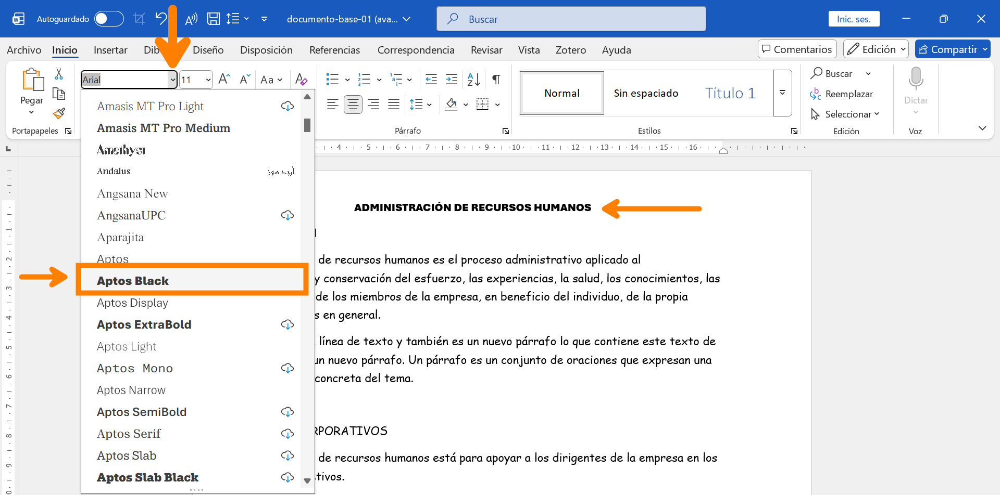
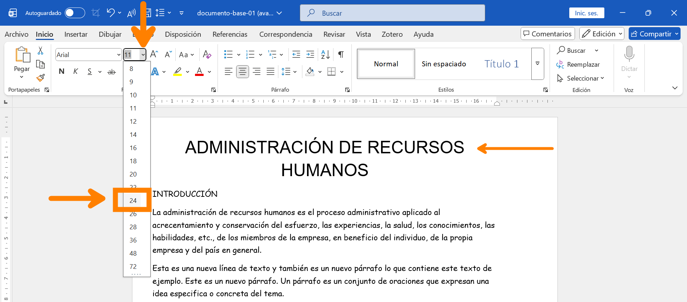

CÓMO CAMBIAR TIPO DE FUENTE Y TAMAÑO
En esta guía aprenderás cómo modificar el tipo de letra (fuente) y su tamaño para personalizar el aspecto de tus documentos en Word.
La elección de la fuente y el tamaño adecuado ayuda a que tu documento comunique el tono correcto y sea legible para el lector.
1. Cambiar el tipo de Fuente (Letra)
Word ofrece una gran variedad de tipos de letras. Algunas son formales (como Arial o Times New Roman) y otras más decorativas.
- Selecciona el texto que deseas cambiar.
- Ve a la pestaña INICIO en la cinta de opciones.
- En el grupo Fuente, haz clic en la flecha desplegable al lado de la fuente actual (generalmente es Calibri).
- Desplázate por la lista y haz clic en la fuente que prefieras. A medida que pasas el ratón por los nombres, podrás ver una vista previa en tu texto.

Para trabajos que impliquen realizar documentos formales, es recomendable usar uno de estos tipos de fuentes:
- Arial, 11 pto
- Times New Roman, 12 pto
Atajo para ver más detalles del tipo de fuente
- Presiona Ctrl + Shift + F
2. Cambiar el Tamaño de Fuente
El tamaño de la letra se mide en puntos (pto). Mientras mayor es el número, más grande es la letra.
Método del menú desplegable:
- Con el texto seleccionado, ve al grupo Fuente en la pestaña INICIO.
- Haz clic en la flecha junto al número de tamaño (por defecto suele ser 11).
- Elige un número de la lista (por ejemplo, 12 para texto normal o 14/16 para títulos).

Método de los botones de Aumentar/Disminuir:
Junto al número de tamaño, encontrarás dos botones con la letra A (una más grande y otra más pequeña). Al hacer clic en ellos, aumentarás o disminuirás el tamaño del texto seleccionado paso a paso.
Atajos del teclado para el tamaño:
- Aumentar tamaño: Ctrl + >
- Disminuir tamaño: Ctrl + <